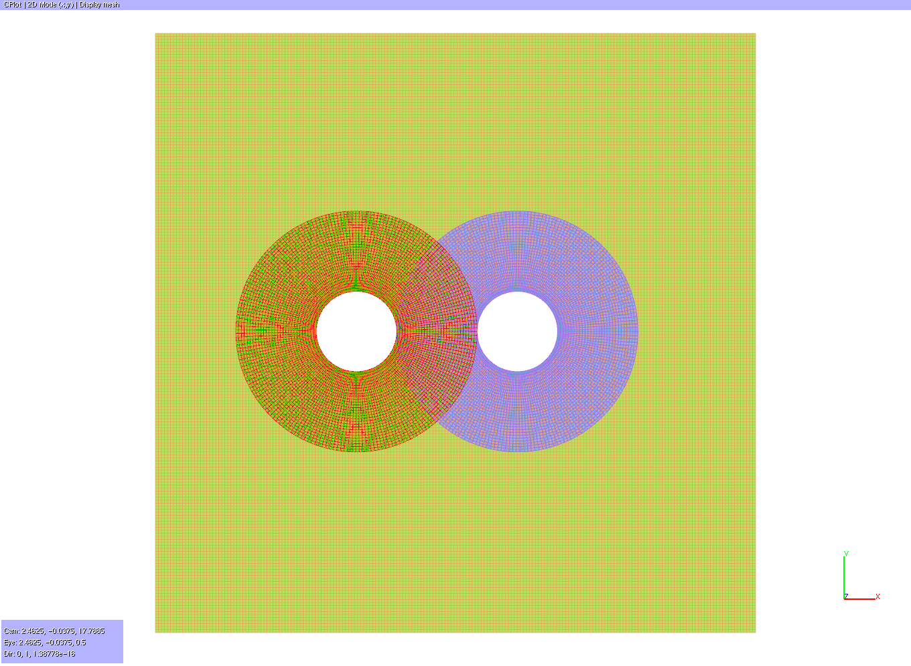
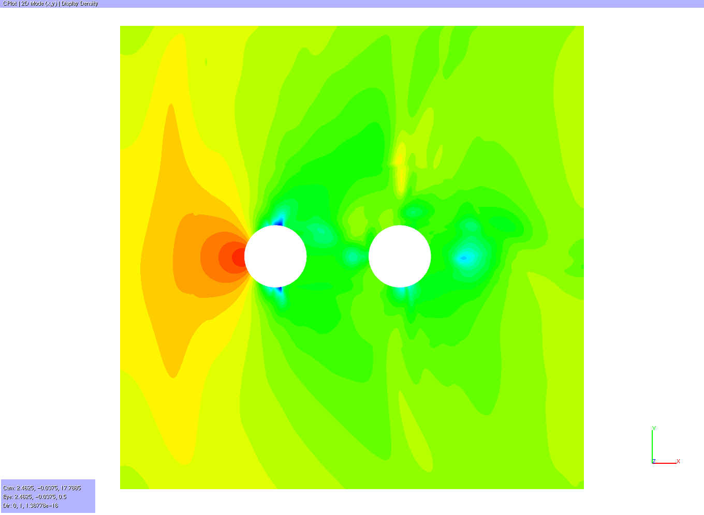

This tutorial demonstrates how to compute Chimera connectivities and blanking with Cassiopee and generate files readable by elsA.
|
 Blanked mesh after 100 iterations of a elsA computation. |
 Density field after 100 iterations of a elsA computation with Chimera files generated by Cassiopee. |
In this example, the mesh is made of a Chimera assembly of two overlapping cylinders and a background Cartesian grid.
Chimera grid assembly is performed as in the previous tutorials.
To compute interpolation coefficients and to generate interpolation and blanking files
readable by elsA at the same time, the function
X.setInterpolations of the Connector module must be used with the option: prefixFile.
Generated files can then be reread by elsA through keys 'chm_conn_io' and 'chm_conn_fprefix'
keys.
Optional: to be able to reread the pyTree with the elsAxdt module,
the function CE.convert2elsAxdt of
the Converter module must be used.
[Download python script].